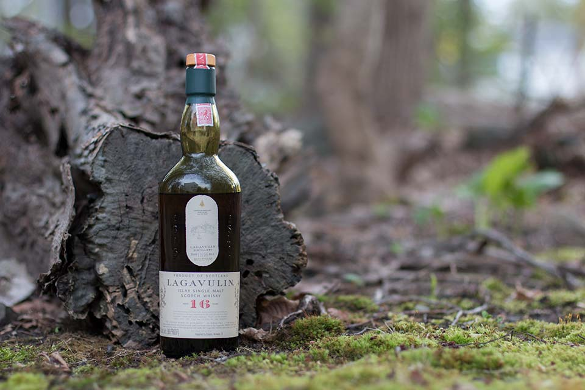
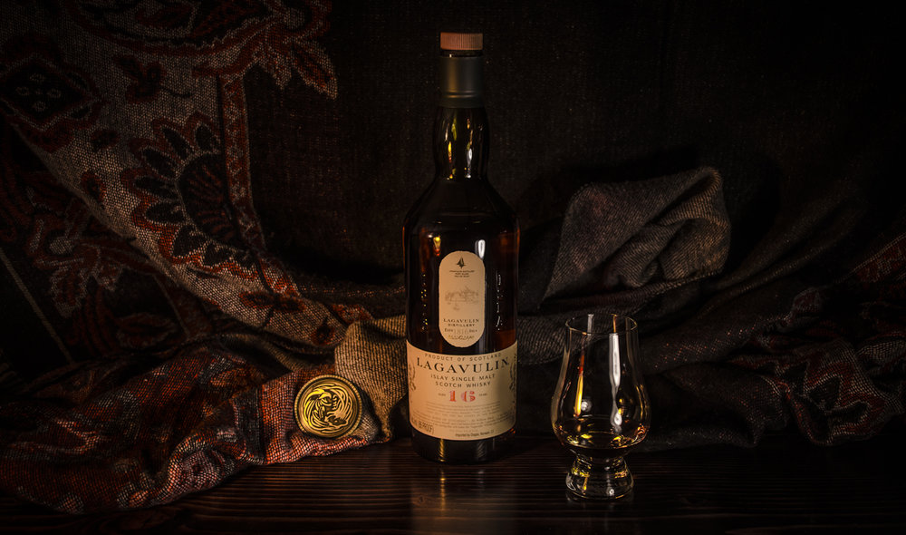

LAGAVULIN 16 YO – JAK SMAKUJE SŁAWNA SINGLE MALT WHISKY Z ISLAY?
Przejdź do notki smakowej >>Lagavulin 16 yo to potężnie dymna whisky, która powszechnie uważana jest za wspaniały destylat. Dzisiaj wydaje się niewiarygodnym, że destylarnia Lagavulin została stworzona, aby kopiować sąsiadującą z nią Laphroaig. Wtedy niestety, a dzisiaj na szczęście, nie udało się tego osiągnąć i powstała whisky, która powszechnie uchodzi za najbardziej nobliwą na całej Islay.
Historia destylarni Lagavulin sięga 1816 roku kiedy to John Jonston i Archibald Campbell zbudowali dwie destylarnie w tym samym miejscu, które później połączyły się w jedną. Nazwa Lagavulin pochodzi od galeickiego Lag a Mhuillin co oznacza „młyn w dolinie”.

Lagavulin wchodzi w skład Classic Malts (pozostałe whisky w tej „rodzinie” to: Cragganmore, Dalwhinnie, Glenkinchie, Oban i Talisker), czyli whisky wspólnie promowanych przez DIAGEO – alkoholowego kolosa i właściciela marki Johnnie Walker, o którym wspominałem już wielokrotnie na łamach bloga. Wiele mówi się też o tym, że dzisiejsza Lagavulin to ofiara wielkiego popytu i, że nie jest już tym czym była 30-40 lat temu. Może i tak, ale nostalgia leży w naturze człowieka, a rzeczywistość jest taka, że powszechnie dostępna jest tylko współcześnie produkowana Lagavulin więc należy skupiać się na niej.

Kolor: Bursztyn
Nos: Lotna – pachnie cały pokój. Torfowa, ale nie w taki sposób jak Laphroaig. Nie eksploduje dymem tylko delikatnie go uwalnia w całej palecie innych aromatów. Pojawia się zatem winność, morskość, miód i suszone owoce
Smak: Na języku jest oleista, rozgrzewająca, ale nie mocno pieprzna jak w przypadku młodych whisky
Finisz: Finisz to eksplozja torfu, która zaczyna się z siłą zbliżoną do Laphroaiga. Jednak już po chwili widać, że jest ona ujarzmiona szesnastoletnim leżakowaniem. Czyni to „Lagę” nieco bardziej łagodnym maltem i pozwala mu długo wybrzmiewać w ustach
Ocena:86/100
Nos: Lotna – pachnie cały pokój. Torfowa, ale nie w taki sposób jak Laphroaig. Nie eksploduje dymem tylko delikatnie go uwalnia w całej palecie innych aromatów. Pojawia się zatem winność, morskość, miód i suszone owoce
Smak: Na języku jest oleista, rozgrzewająca, ale nie mocno pieprzna jak w przypadku młodych whisky
Finisz: Finisz to eksplozja torfu, która zaczyna się z siłą zbliżoną do Laphroaiga. Jednak już po chwili widać, że jest ona ujarzmiona szesnastoletnim leżakowaniem. Czyni to „Lagę” nieco bardziej łagodnym maltem i pozwala mu długo wybrzmiewać w ustach
Ocena:86/100